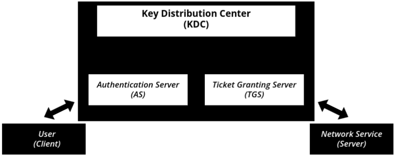

Introduction to Network security
- Network Security is the practice of protecting a computer network and its resources from unauthorized access, cyberattacks, and data breaches. It ensures that only authorized users can access information while keeping data confidential, intact, and available.
- In simple words, Network Security is like a protective shield that safeguards computers, devices, and data from cyber threats.
Why is Network Security Important?
- 📌 Protects Sensitive Data – Ensures that personal and business data is safe from cybercriminals.
- 📌 Prevents Unauthorized Access – Only trusted users can access private networks.
- 📌 Ensures Data Integrity – Prevents hackers from modifying important information.
- 📌 Maintains Network Availability – Stops attacks that can crash or disrupt services.
- Steal customer login details.
- Transfer money illegally.
- Leak sensitive financial data.
Common Threats in Network Security
- 🔹 Unauthorized Access – Hackers breaking into a system without permission.
- Example: Guessing or stealing passwords to log into someone’s account.
- 🔹 Malware (Viruses, Worms, Trojans, Ransomware) – Malicious programs that harm or
control systems.
- Example: A virus that corrupts important files and makes them unusable.
- 🔹 Phishing Attacks – Fake emails/websites tricking users into sharing sensitive data.
- Example: A fake email pretending to be from a bank, asking for login details.
- 🔹 Denial of Service (DoS) Attacks – Overloading a website or system to make it crash.
- Example: A hacker sending thousands of fake requests to a website, making it unavailable for real users.
- 🔹 Man-in-the-Middle (MITM) Attacks – A hacker intercepting and altering communication
between two users.
- Example: An attacker spying on an online shopping transaction and stealing credit card details.
How Network Security Works (Protective Measures)
- 🔹 Firewalls – Work like security guards, blocking harmful traffic.
- 🔹 Encryption – Converts data into unreadable code to keep it safe.
- 🔹 Two-Factor Authentication (2FA) – Adds an extra verification step before login.
- 🔹 Virtual Private Networks (VPNs) – Encrypts internet traffic for secure browsing.
- 🔹 Antivirus & Anti-malware – Detects and removes malicious software.
Goals of Network Security
Network security aims to protect data and systems from threats. Its main goals are:
- Confidentiality: Keeping data private and ensuring only authorized access. For example, using encryption to secure passwords.
- Integrity: Ensuring data is accurate and unaltered. Hashing techniques help maintain data accuracy.
- Availability: Ensuring systems are always accessible. Network security prevents DDoS attacks that cause downtime.
- Authentication: Verifying identity before granting access. This is like showing an ID before entering a building, often enhanced with two-factor authentication.
- Non-repudiation: Ensuring actions can't be denied. Digital signatures and logs provide proof of transactions.
Goals of Network Security
When we talk about network security, it’s not just about putting up firewalls or installing antivirus
software. The ultimate aim is to achieve specific goals that ensure your data and systems remain
safe
and functional. Think of network security like a castle's defense system—it's not just about
building
walls, but about protecting the kingdom in several different ways.
So, what are the goals of network security?:
- Confidentiality: Confidentiality is about keeping sensitive data private and
ensuring that only authorized people have access to it. The idea is to prevent anyone (hackers,
unauthorized employees, etc.) from viewing or accessing private information.
- Just like you wouldn’t want someone snooping through your personal documents or stealing your password, businesses and individuals need to make sure that sensitive information—like financial records, customer details, or trade secrets—stay hidden from unwanted eyes.
- Imagine you're sending a password to someone through email. Without proper security, a hacker could intercept the message and steal the password. Using encryption, you make sure that even if someone intercepts the email, the password is unreadable to them.
- Integrity: Integrity ensures that the data being transmitted or stored is
accurate
and has not been altered by unauthorized individuals. It means that the data you send or store
is
the same as when it was created or shared, without tampering.
- Imagine you’re ordering a product online. What if someone changed the quantity or price of the item during the transaction? You’d end up paying more or receiving the wrong product. Integrity ensures that this doesn’t happen, protecting the accuracy of your information.
- During a financial transaction, if a hacker changes the amount being transferred from your account, that would be an integrity breach. By using techniques like hashing (to check data integrity), systems can ensure data is not tampered with.
- Availability: Availability means that the network, systems, and data are always
accessible when needed. It’s about making sure that legitimate users can always access the
resources
they require, without interruptions or downtime.
- Imagine a hospital’s computer system crashes during an emergency. That would be catastrophic. Whether it’s cloud storage, business applications, or even websites, availability is crucial for business operations and user trust.
- In a DDoS (Distributed Denial of Service) attack, hackers flood a website with so many requests that the site becomes unavailable. Network security prevents such attacks, ensuring that websites, systems, and apps remain available to their users.
- Authentication: Authentication is the process of verifying who you are before
granting access to a network or system. Think of it like showing your ID card before entering a
building. It ensures that only authorized users can access resources.
- You don’t want just anyone logging into your bank account or accessing your personal files. Authentication is the first line of defense against unauthorized access.
- When you log in to a website using your username and password, that’s authentication in action. To strengthen it, many websites also use two-factor authentication (2FA), where you get a code on your phone to prove it’s really you trying to log in.
- Non-repudiation: Non-repudiation means that once something is done, it can’t be
denied. It ensures that someone cannot deny their actions or the authenticity of the data.
- If you make an online purchase, you want to be sure that the transaction is legitimate. Non-repudiation guarantees that there’s evidence proving the action took place, such as logs or signatures.
- If a company makes a financial transfer, the transaction is logged with digital signatures to prove that the transfer was legitimate and authorized. This prevents someone from saying, "I didn’t make that payment," even if they did.
OSI Security Architecture (Also Referred to as ISO Security Architecture)
- Security is a critical aspect of any networked system. The OSI Security Architecture, defined by ISO (International Organization for Standardization), outlines how security threats are categorized, what mechanisms are used to prevent or mitigate them, and what services ensure a secure communication environment.
- The reason it is sometimes called ISO Security Architecture is because the OSI (Open Systems Interconnection) model itself was developed by ISO. Since ISO is the organization that defined this security framework, some materials refer to it as "ISO Security Architecture." However, the correct and widely used term is OSI Security Architecture, as it specifically applies to securing network communication under the OSI model.
- The OSI Security Architecture is a framework that defines security requirements for network communication. It is part of the Open Systems Interconnection (OSI) model and provides a structured way to understand and implement security measures across different layers of a network.
- In a network, data passes through multiple layers, and each layer can be vulnerable to different types of attacks. The OSI Security Architecture helps identify security threats and suggests countermeasures at each level.
Understanding Threats and Attacks
- Threat: The Potential for Danger
- A threat is a potential risk that can exploit a weakness in the system.
- Your Wi-Fi network at home has no password. Even if no one has hacked it yet, the possibility of someone stealing your internet or spying on your online activity is a threat.
- Attack: When the Threat Becomes Real
- An attack is a deliberate attempt to compromise a system’s security by exploiting a vulnerability.
- If a hacker connects to your unprotected Wi-Fi, intercepts your network traffic, and steals your personal information, this is an attack.
Three Components of OSI Security Architecture
- Security Attacks – Different types of attacks that can compromise security.
- Security Mechanisms – Methods used to prevent, detect, or respond to these attacks.
- Security Services – Services designed to achieve security goals like confidentiality and authentication.
Security Attacks
- Security attack matlab koi bhi aisi activity jo system, kisi person ya organization ki security ko tod de. Isse kya kya ho sakta hai:
- Data ka loss (important files delete ya chori ho jaana)
- Data kharab ho jaana (files bina permission ke change ho jaana)
- Ransomware attacks (hackers aapki files lock kar lete hain aur paise maangte hain)
- Virus aur malware attacks (harmful programs jo system ko damage kar dete hain)
- Server ka defacement (website ko hack karke galat messages dikhana ya misinformation failana)
- Security attacks do types ke hote hain:
- Passive Attacks – Attacker chupke se data ko sunta ya monitor karta hai.
- Active Attacks – Attacker data ko change karta hai, disrupt karta hai ya jhootha data create karta hai.
Passive Attack
- Passive attack mein attacker chupke se communication ko sunta hai bina kuch change kiye.
- Passive Attack ke main points:
- ✔ Data mein koi change nahi hota
- ✔ Sirf padhna, dekhna ya chupke se sunna
- ✔ Detect karna mushkil hota hai kyunki koi badlav nahi hota
- Socho Bob aur Alice baat kar rahe hain. Darth naam ka hacker chupke se unki baat sun raha hai, bina kuch interfere kiye. Ye hi hota hai passive attack.
Types of Passive Attacks
- Release of Message Contents: Attacker confidential information ko padh leta hai jo exchange ho rahi hoti hai.
- Example:
- Tum apne bank ko ek private email bhejte ho, aur ek hacker use chupke se padh leta hai.
- Ek spy do diplomats ke secret phone call ko sunta hai.
- Prevention:
- Encryption – Agar Bob apna message encrypt karke bhejta hai toh Darth usse nahi padh sakta.
- Example:
- Traffic Analysis: Agar data encrypt bhi ho, phir bhi attacker jaan sakta hai kaun kis se baat kar raha hai, kitni baar aur kitni der tak.
- Example:
- Ek hacker dekhta hai ki ek CEO aur CFO baar-baar email kar rahe hain, chahe emails encrypted hi kyu na ho. Shayad koi important deal ho rahi ho.
- Prevention:
- VPNs ya Tor Networks use karo – Ye communication pattern ko chhupa dete hain.
- Example:
Active Attacks
- Active attack mein attacker data ko modify karta hai, communication ko disrupt karta hai ya jhooti information bhejta hai.
- Active Attack ke main points:
- ✔ Data ko change, delete ya insert kiya ja sakta hai
- ✔ Passive attacks se zyada harmful hote hain
- ✔ Detect karna easy hota hai, par prevent karna difficult
Chalo active attacks ke 4 main types dekhte hain.
- Masquerade Attack (Bhram ya Nakal): Attacker kisi aur ke naam pe access lene ki koshish karta hai.
- Example:
- Ek hacker tumhara login username aur password chura leta hai aur tumhare naam se login karta hai.
- Ek fake email aata hai jo tumhare bank ka lagta hai, aur tumse password maangta hai.
- Prevention: Two-factor authentication (2FA) – Agar hacker password chura bhi le, toh second step ke bina login nahi kar paayega.
- Example:
- Replay Attack (Copy-Paste Attack): Attacker ek original message ko record karke dubara bhejta hai taaki recipient ko confuse kar sake.
- Example:
- Tumne message bheja: "Transfer ₹10,000 to Alice."
- Attacker is message ko record karke baad mein fir se bhej deta hai, jisse ek aur transaction ho jaata hai bina tumhare jaane.
- Prevention: Timestamps aur session tokens ka use – Ye purane messages ko dubara use hone se rokta hai.
- Example:
- Modification of Messages (Message Tampering): Attacker message ko beech mein hi change kar deta hai.
- Example:
- Bob message bhejta hai: "Allow John to access the files."
- Darth beech mein message ko change karke bana deta hai: "Allow Tim to access the files."
- Ab galat insaan ko access mil gaya!
- Prevention: Digital signatures – Ye ensure karta hai ki message transmit hote time change na ho.
- Example:
- Denial of Service (DoS Attack): Attacker system ko itna busy kar deta hai ki asli users use access nahi kar paate.
- Example:
- Ek hacker website pe itne zyada requests bhejta hai ki wo crash ho jaati hai.
- Ek spam bot hazaron login attempts bhejta hai, jisse real users login nahi kar paate.
- Prevention: Firewalls aur rate-limiting ka use – Ye unusual traffic ko block karte hain.
- Example:
Differences Between Passive and Active Attacks
| Aspect | Passive Attack | Active Attack |
|---|---|---|
| Nature | Communication ko sirf observe karta hai, koi change nahi karta | Data ko modify ya disrupt karta hai |
| Harm Level | Kam harmful hota hai; sirf information collect karta hai | Zyada harmful; data ko badal sakta hai ya damage kar sakta hai |
| Detectability | Detect karna mushkil (kyunki koi interfere nahi karta) | Asaani se detect ho jata hai (kyunki disruption hoti hai) |
| Example | Network pe chupke se baatein sunna | Data ko hack karke usme badlav karna |
Security Services
- Security service ek aisi feature hoti hai jo data ko protect karti hai aur users ya systems ke beech secure communication ensure karti hai.
- Yeh important kyun hain?
- ✔ Unauthorized logon ka access rokta hai
- ✔ Data private bana ke rakhta hai
- ✔ Communication mein trust aur authenticity banaye rakhta hai
- ✔ Cyberattacks aur fraud se protection deta hai
- Security services ek secured system ke through provide hoti hain taaki communication safe aur reliable ho.
- Types of Security Services: 6 major security services hoti hain jo data aur communication ko secure banati hain:
- Authentication
- Peer Entity Authentication
- Data Origin Authentication
- Access Control
- Data Confidentiality
- Data Integrity
- Non-Repudiation
- Authentication
1: Authentication (Identity verify karna)
Authentication ensure karta hai ki sender aur receiver wahi log hain jo wo claim kar rahe hain. Isse imposter ya fake log sensitive info tak nahi pahuch paate.
Authentication ke do types hote hain:
- Peer Entity Authentication (Real-Time Verification): Isme check hota hai ki jis entity se aap baat kar rahe ho, wo real hai ya nahi jab tak session chal raha hai.
- Example:
- Jab aap kisi banking website me login karte ho, to system baar-baar check karta hai ki abhi bhi wahi user ho ya koi hacker replace toh nahi kar gaya.
- Do devices network pe connected hote hain aur real-time me ek dusre ki identity verify karte hain.
- Protection Methods: Multi-factor authentication (MFA) jisse extra security milti hai
- Example:
- Data Origin Authentication (Sender ka verification): Ye confirm karta hai ki data kisne bheja hai. Isse yeh ensure hota hai ki message jisne bhejne ka claim kiya hai, wahi bhejne wala hai — koi attacker nahi.
- Example:
- Agar aapko aapke bank se email aata hai, to yeh service ensure karti hai ki email sach me bank se aaya hai, scammer se nahi.
- Ek document pe digital signature hota hai jo prove karta hai ki sender correct tha.
- Protection Methods: Digital signatures aur cryptographic verification
- Example:
2: Access Control (Kisko kya access mil sakta hai?)
- Access control decide karta hai ki kaun data ko access kar sakta hai aur us data ke sath kya kar sakta hai.
- Example:
- Ek company ka HR system sirf HR employees ko salary data dekhne deta hai.
- Aapka cloud storage (jaise Google Drive) aapko decide karne deta hai ki kaun aapke files dekh sakta hai, edit kar sakta hai ya download kar sakta hai.
- Protection Methods:
- Role-Based Access Control (RBAC) – Users ko unke role ke hisaab se permissions milti hain.
- User authentication (passwords, biometrics, etc.)
3: Data Confidentiality (Data ko private rakhna)
- Confidentiality ensure karta hai ki sirf authorized users hi data ko read kar saken. Agar hacker data chura bhi le, to bina decrypt kiye use samajh nahi payega.
- Example:
- Jab aap WhatsApp message bhejte ho, to wo encrypted hota hai, matlab sirf receiver hi usse padh sakta hai.
- HTTPS website pe shopping karte waqt aapke credit card details safe rahte hain.
- Protection Methods:
- Encryption – Data ko unreadable format me convert karta hai (e.g., AES, RSA).
4: Data Integrity (Data badla toh nahi?)
- Integrity ensure karta hai ki data transmission ke dauraan change nahi hua hai. Agar koi data modify kare, to receiver ko pata chal jaata hai.
- Example:
- Aap jab kisi official website se software download karte ho, to checksum (hash value) check karta hai ki data modify toh nahi hua.
- Bank transaction ensure karta hai ki amount beech me kisi attacker ne change nahi kiya hai.
- Protection Methods: Hash functions (SHA-256, MD5) – Data ka unique fingerprint banate hain.
5: Non-Repudiation (Baad me mana na kar paaye)
- Ye ensure karta hai ki sender baad me ye na keh paaye ki usne message ya transaction nahi kiya. Isme proof hota hai ki kaun user responsible tha.
- Example:
- Agar koi person email bhejta hai aur baad me keh deta hai ki usne nahi bheja, to Non-repudiation proof deta hai ki email usi ne bheja tha.
- Online banking me agar customer money transfer karta hai, to system uske digital signature ko record karta hai — jisse woh deny nahi kar sakta.
- Protection Methods:
- Digital Signatures – Message ko specific sender se link karta hai.
- Transaction logs – Saari activities ka record rakhta hai.
Security Mechanisms
- Security mechanism ek aisa tool ya process hota hai jo data aur systems ko attack se bachata hai.
- Security mechanisms important kyun hote hain?
- ✔ Ye security rules ko follow karwate hain
- ✔ Attacks ko detect aur prevent karte hain
- ✔ Secure communication aur data protection mein help karte hain
- Aise samjho: agar security services law hain, toh security mechanisms un laws ko follow karwane waale police ya tools hote hain. 🚓🔒
- Security mechanisms do types ke hote hain:
- Specific Security Mechanisms (Jo particular security task ke liye banaye jaate hain)
- Pervasive Security Mechanisms (Jo background mein continuously kaam karte hain security maintain karne ke liye)
1. Specific Security Mechanisms
Ye mechanisms directly security dene ke liye use hote hain. Ye special security kaam jaise encryption, authentication, aur access control ke liye design kiye jaate hain.
Chalo kuch important specific mechanisms dekhte hain:
- Encipherment (Encryption): Is mechanism mein readable data (plaintext) ko unreadable format (ciphertext) mein convert kiya jaata hai taaki koi unauthorized banda use samajh na paaye.
- Example:
- WhatsApp messages encrypted hote hain, matlab sirf sender aur receiver hi unhe padh sakte hain.
- HTTPS websites aapki credit card details ko secure rakhti hain jab aap online shopping karte ho.
- Methods Used:
- Symmetric Encryption – Encrypt aur decrypt dono ke liye same key use hoti hai (AES, DES).
- Asymmetric Encryption – Encryption ke liye public key aur decryption ke liye private key use hoti hai (RSA, ECC).
- Example:
- Digital Signatures: Digital signature ensure karta hai ki message ya document asli hai aur beech mein modify nahi hua.
- Example:
- Jab aap koi software download karte ho, digital signature confirm karta hai ki wo official source se hi aaya hai.
- Online contracts mein fraud avoid karne ke liye digital signatures use hote hain.
- Methods Used:
- Hash functions (SHA-256, MD5)
- Public Key Infrastructure (PKI)
- Example:
- Access Control: Ye decide karta hai ki kaun kisi resource ko dekh sakta hai, change kar sakta hai ya use kar sakta hai.
- Example:
- Sirf HR team hi payroll data dekh sakti hai.
- Online banking mein 2-factor authentication use hota hai.
- Methods Used:
- Role-Based Access Control (RBAC)
- Multi-Factor Authentication (MFA)
- Example:
- Authentication Exchange: Ye verify karta hai ki user kaun hai usse access dene se pehle.
- Example:
- Website login karte waqt username aur password se verify karna.
- Smartphone ka fingerprint ya face unlock.
- Methods Used:
- Biometric authentication (fingerprint, retina scan, face ID)
- Password-based authentication
- Example:
2. Pervasive Security Mechanisms
Specific mechanisms ke opposite, ye background mein silently kaam karte hain taaki overall system secure rahe. Ye detect, prevent aur recovery mein help karte hain.
Yahan kuch important pervasive mechanisms hain:
- Security Audit & Monitoring: System ke activities track karta hai taaki security threats detect ho sakein.
- Example:
- Bank unusual transactions ko monitor karta hai taaki fraud detect ho sake.
- Companies unauthorized access track karne ke liye firewalls use karti hain.
- Methods Used:
- Log analysis
- Example:
- Security Recovery: Attack hone ke baad system ko wapas normal state mein laata hai.
- Example:
- Ransomware attack ke baad backup se files ko restore karna.
- Server crash ke baad data ko restore karna disaster recovery plan se.
- Methods Used:
- Backup and restore
- Disaster recovery planning
- Example:
- Event Logging: Sabhi security-related events ka record rakhta hai taaki future analysis ya investigation ho sake.
- Example:
- Failed login attempts ka record hacking attempt detect karne mein help karta hai.
- Security systems critical file changes ko log karte hain.
- Methods Used: Automated log analyzers
- Example:
- Security Awareness & Training: Users ko cyber threats aur unse kaise bacha jaaye iski training di jaati hai.
- Example:
- Employees ko phishing emails se kaise bachein, iski training di jaati hai.
- Schools students ko cybersecurity ke basics sikhate hain.
- Mehods Used:
- Cybersecurity Workshops.
- Regular security drills.
- Example:
Authentication Applications
Ab jab humne security ke baare mein thoda samajh liya, toh chalo ab authentication pe focus karte hain, jo ensure karta hai ki sirf sahi log hi access le saken.
Authentication ki Zarurat Samjho
- Socho tum apne bank account mein login kar rahe ho. System kaise jaanega ki sach mein tum hi ho? Yahi kaam karta hai authentication!
- Authentication ensure karta hai ki sirf sahi aadmi (ya device) ko hi system ka access mile, unauthorized logon ko rokta hai.
- Networks mein authentication users, devices, aur systems ki identity verify karta hai, tabhi unhe sensitive data ya services tak access milta hai.
- Agar authentication na ho, toh koi bhi tumhari jagah ban sakta hai, jis se data breach, identity theft, aur system ka galat istemal ho sakta hai.
Authentication se judi common threats kya hain?
- Phishing Attacks: Hackers users ko trick karte hain apne passwords dene ke liye, jaise ki fake websites ke through.
- Brute Force Attacks: Automated programs kayi passwords try karte hain jab tak sahi password na mil jaye.
- Man-in-the-Middle (MITM) Attacks: Hacker chupke se do parties ke beech ki baat cheet ko intercept aur badal deta hai.
- Credential Stuffing: Attackers chori kiye hue username-password ek site se leke doosri site pe login karne ki koshish karte hain.
- Session Hijacking: Ek attacker kisi user ki active session chura leta hai aur bina permission ke uske account mein ghus jata hai.
Authentication communication mein security kaise ensure karta hai?
- Username & Password: Sabse basic tareeka hai, par weak ho sakta hai agar password strong na ho ya bar bar use ho raha ho.
- Two-Factor Authentication (2FA): Ek extra security layer add karta hai, jisme second step hota hai jaise phone pe bheja gaya code.
- Biometric Authentication: Fingerprints, face recognition, ya retina scans ka use karta hai unique aur secure identification ke liye.
- Digital Certificates (SSL/TLS): Internet jaise networks pe encrypted aur secure communication ensure karta hai.
- Kerberos Authentication: Network authentication protocol hai jo encrypted tickets use karta hai user ki identity verify karne ke liye bina passwords bheje.
Authentication Mechanisms
- Authentication mechanisms wo alag-alag tareeke hain jo user, device, ya system ki identity verify karne ke liye use hote hain pehle access dene se pehle.
- Sirf passwords secure nahi hote, isliye advanced mechanisms cryptography, certificates, ya secure ticket-based systems use karte hain taaki security badh sake.
-
Do famous authentication mechanisms hain Kerberos aur X.509, jo alag-alag situations ke liye banaye gaye hain:
-
Kerberos: Network environments mein use hota hai jahan users ko baar-baar password enter kiye bina securely authenticate karna hota hai.
Real-life example: Jab ek employee apne office computer mein login karta hai aur bina baar-baar password dale emails, files, printers access karta hai — yehi Kerberos ka kamaal hai.
Crux: Kerberos network ke andar user ko authenticate karta hai. -
X.509: Internet security mein use hota hai, jaise SSL/TLS certificates, online identities verify karne ke liye.
Real-life example: Jab tum kisi secure website pe jaate ho jaisehttps://yourbank.comaur browser mein padlock icon dikhta hai — yehi X.509 site ki identity prove kar raha hota hai.
Crux: X.509 internet pe website/server ko authenticate karta hai.
Summary: Kerberos internal networks jaise office ya school mein users ko authenticate karta hai taaki wo multiple services secure tarike se bina baar-baar login kiye use kar saken. Dusri taraf, X.509 internet pe websites ko authenticate karta hai SSL/TLS ke through, taaki users asli aur secure sites se hi connect karen.
-
Kerberos: Network environments mein use hota hai jahan users ko baar-baar password enter kiye bina securely authenticate karna hota hai.
Kerberos
- Kerberos ek network authentication protocol hai, matlab yeh check karta hai ki user asli hai ya nahi aur trusted hai ya nahi, uske baad hi network ka access deta hai. Socho tum ek high-security building mein jaana chahte ho. Tum bas aise andar nahi jaa sakte; tumhe ek ID card ya pass chahiye jo prove kare ki tum authorized ho. Kerberos bhi waise hi computer networks ke liye kaam karta hai.
- Kerberos ka main goal security hai. Yeh ensure karta hai ki sirf verified users hi network resources use kar sakein aur attackers kisi aur ke naam pe pretend na kar paayein.
Why Do We Need Kerberos?
- Maan lo tum college Wi-Fi ya company server mein login kar rahe ho. System ko confirm karna hota hai ki:
- Tum wahi ho jo tum kehte ho (authentication).
- Tumhe kuch specific resources access karne ki permission hai (authorization).
- Tumhare login details network pe bhejte waqt chori nahi ho rahe.
- Agar proper authentication na ho toh hackers tumhare passwords chura ke asli user ban sakte hain. Kerberos is problem ko tickets use karke solve karta hai, passwords ke bajaye.
Key Features of Kerberos
- Client-Server Architecture
- User (client) network services ke liye request bhejta hai.
- Server tabhi access deta hai jab authentication ho jaaye.
- Uses Symmetric Key Encryption
- Wohi key encryption aur decryption dono ke liye use hoti hai, jisse communication secure hota hai.
- Relies on a Trusted Third Party (TTP)
- Is trusted authority ko Key Distribution Center (KDC) kehte hain.
- KDC authentication manage karta hai aur secret keys securely provide karta hai.
Understanding Kerberos with an Example
Maan lo tum company ke internal database ko access karna chahte ho. Yeh raha step-by-step process jisse Kerberos secure access deta hai:
- You Request Access
- Tum (user) Kerberos ke Key Distribution Center (KDC) ko request bhejte ho, "Hey, mujhe database access karna hai!"
- Authentication Server (AS) Checks Your Identity
- KDC ke do parts hote hain:
- Authentication Server (AS) – Yeh check karta hai ki tum kaun ho.
- Ticket Granting Server (TGS) – Network services ke liye access deta hai.
- KDC ke do parts hote hain:
- You Decrypt the Ticket
- Yeh ticket ek sealed letter jaisa hota hai jo sirf tum khol sakte ho. Tum apni secret key (jaise password) se ise decrypt karte ho. Decrypted ticket mein ek hash code hota hai (special encrypted signature).
- Proving Your Identity
- Tum hash code wapas AS ko bhejte ho proof ke liye ki tumne ticket sahi se decrypt kiya. Agar hash code sahi hua, toh AS confirm karta hai, "Haan, yeh banda asli hai!"
- Getting a Service Ticket
- Ab AS Ticket Granting Server (TGS) ko involve karta hai. TGS ek Service Ticket (session key bhi kehte hain) banata hai. Yeh ticket ek VIP pass jaisa hota hai jo tumhe network services use karne deta hai.
- Accessing the Network
- Service ticket ke saath ab tum securely database ya kisi aur network service se baat kar sakte ho. Tumhe apna password baar-baar bhejne ki zarurat nahi, ticket se apni authenticity prove karte ho.
Why is Kerberos Secure?
- No Passwords Sent Over the Network
- Kerberos tumhara password network pe nahi bhejta, balki encrypted tickets use karta hai.
- Session Keys for Each Login
- Har session ke liye alag secret key hoti hai, jis se attackers purani data reuse nahi kar pate.
- Mutual Authentication
- Sirf server hi user ko verify nahi karta, user bhi server ko verify karta hai, jis se phishing attacks nahi hote.
- Prevents Replay Attacks
- Agar attacker tumhara ticket capture kar bhi le, tab bhi wo usse dubara use nahi kar sakta kyunki Kerberos har ticket pe timestamp lagata hai.
Kerberos corporate networks, government systems, aur Windows Active Directory mein bahut use hota hai. Yeh ensure karta hai ki sirf asli aur trusted users hi network resources access kar sakein aur sab kuch secure rahe.
X.509 Authentication Service
- X.509 ek popular digital certificate standard hai jo internet security me bahut important role play karta hai. Ye mainly SSL/TLS protocol me use hota hai, jo aapke browser aur website ke beech communication ko secure banata hai.
- X.509 website ki asli hone ki guarantee deta hai digital certificate ke through. Is certificate me website ka public key hota hai aur ye ek trusted third party, jise Certificate Authority (CA) kehte hain, ke dwara issue kiya jata hai. Ye certificate website ki identity proof karta hai aur communication secure banata hai.
-
Ye digital certificates important info contain karte hain jaise:
- Website ka domain name: jaise
example.com - Website ka public key
- Issuing Certificate Authority (CA)
- Certificate ka expiration date
- Website ka domain name: jaise
-
Real-life example: Jab aap
https://yourbank.comjaisi website visit karte ho, toh aapka browser automatic check karta hai ki site ke paas valid X.509 certificate hai ya nahi. Agar sab kuch theek hai, toh address bar me padlock icon (🔒) dikhata hai, matlab connection secure hai aur site verified hai. - Agar certificate invalid, expired, ya fake hai, toh browser aapko warning deta hai jaise "Your connection is not private," taaki aap apni personal ya financial info na daalein.
- Simple words me: X.509 certificates aapko un attackers se bachate hain jo fake websites bana ke asli websites ka naam use karte hain. Ye ensure karta hai ki aap asli website se hi baat kar rahe ho, na ki kisi fake ya harmful site se.
Why Do We Need X.509?
- Bina proper authentication ke, attackers websites, servers, ya logon ka naam badal ke fraud kar sakte hain.
- X.509 aise attacks ko rokta hai by:
- Trusted tareeke se identities verify karne ke liye digital certificates provide karta hai.
- Public Key Infrastructure (PKI) use karke communication encrypt karta hai.
- Man-in-the-Middle (MITM) attacks ko rokta hai, jahan attacker data ko beech me intercept karta hai.
How Does X.509 Work?
- X.509 public key cryptography use karta hai, jisme har user ke paas hota hai:
- Ek public key (jo dusro ke sath share hoti hai).
- Ek private key (jo sirf user ke paas secret hoti hai).
- Ek Certificate Authority (CA) digital certificates issue karta hai jo public key ko kisi specific user ya organization se jodta hai.
Structure of an X.509 Certificate

- Har X.509 certificate ek fixed format follow karta hai jisme important details hoti hain.
- 📌 X.509 Certificate ke key fields:
- Version (V1, V2, V3): Certificate ka format define karta hai. V3 latest version hai jisme extra security features hote hain.
- Serial Number: Certificate Authority ke dwara diya gaya unique ID.
- Signature Algorithm Identifier: Wo algorithm jo certificate ko sign karne me use hota hai (jaise RSA, SHA-256).
- Issuer Name: Wo Certificate Authority (CA) jinhone certificate issue kiya.
- Validity Period:
- Certificate ka start aur expiration date batata hai.
- Expiration ke baad certificate ko trust nahi kiya jata.
- Subject Name: Wo entity (person, organization, ya website) jiske naam certificate hai.
- Public Key Information: Public key jo encryption aur authentication me use hoti hai.
- Issuer Unique ID (Optional in V2 & V3): Same CA ke certificates ko alag karne ke liye.
- Subject Unique ID (Optional in V2 & V3): Same subject ko diye gaye multiple certificates ko differentiate karne ke liye.
- Extensions (Sirf V3 me): Extra security features jaise:
- Key Usage: Certificate kis purpose ke liye use ho sakta hai batata hai.
- Certificate Policies: Certificate use karne ke rules.
- Alternative Subject Names: Multiple domain names allow karta hai.
Understanding X.509 with an Example
- Maan lo aap visit kar rahe ho https://www.example.com. Aapka browser website ke X.509 certificate ko check karta hai:
- Issuer (CA) verify karta hai:
- Check karta hai ki Certificate Authority (jaise DigiCert, Let’s Encrypt) trustworthy hai ya nahi.
- Validity Period check karta hai:
- Agar certificate expire ho gaya hai toh browser warning deta hai.
- Public Key website se match karta hai:
- Attackers ke fake certificates use karne se rokta hai.
- Agar sab kuch sahi hai toh browser website ko trust karta hai aur aap secure browsing kar sakte ho.
Why is X.509 Secure?
- Identity Fraud se bachata hai – Sirf verified entities ko certificates milte hain.
- Strong Cryptography use karta hai – Public-private key encryption data ko secure banata hai.
- Certificate Revocation support karta hai – Agar certificate compromise ho jaye toh usko revoke kiya ja sakta hai.